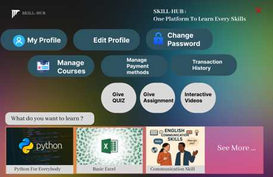
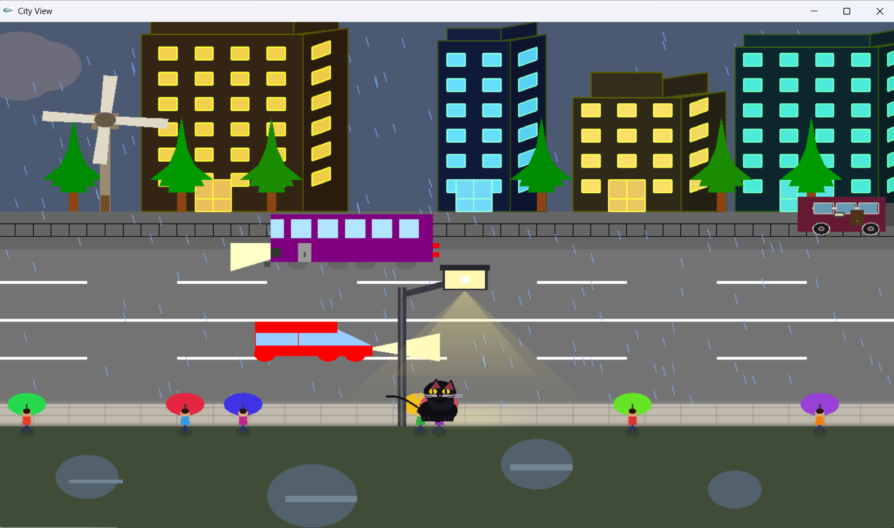

Role: UX/UI Designer
Tools: Figma, Wireframing, Prototyping, User Flow Design
Skill Hub is a comprehensive E-Learning Management Platform designed to connect students, teachers, and administrators through a centralized digital learning environment. As the sole UX/UI Designer for this project, I was responsible for designing the complete user experience and interface for all user roles.
I conducted the planning and design process from the ground up, creating user flows, low-fidelity wireframes, high-fidelity mockups, and interactive prototypes using Figma. The platform includes separate dashboards and functionalities for administrators, teachers, and students. Key features include user authentication, course management, mentor-student communication, assessments and quizzes, progress tracking, and secure payment processing.
Throughout the design process, I focused on usability, accessibility, and intuitive navigation to ensure a seamless learning experience. The final design provides a modern, responsive, and user-friendly interface that simplifies online education management while improving engagement and productivity for all users.

Role: Graphics Programmer
Tools: C++, OpenGL, GLUT
The City View Graphics Simulation is a computer graphics project developed using C++ and OpenGL to create an interactive animated nighttime city environment. The project showcases various computer graphics concepts including animation, object movement, scene rendering, and visual storytelling.
The scene features moving cars, buses, and trains traveling through the city, creating a realistic urban environment. A rotating windmill adds dynamic motion to the landscape, while a lamp post illuminates the surrounding area. To enhance realism and creativity, I implemented an animated black cat sitting beneath the lamp post, with blinking eyes and a continuously moving tail. The project also incorporates night-time visual effects and coordinated animations to create an engaging and immersive city atmosphere.
Through this project, I gained practical experience in graphics programming, coordinate systems, animation techniques, event handling, and rendering complex scenes using OpenGL. The project highlights both my technical programming abilities and my attention to visual design and detail.

Role: Software Developer
Tools: Java
The Coffee Shop Management System is a desktop-based application developed to streamline the operations of a coffee shop while providing an efficient ordering experience for customers. The system supports three different user roles: Admin, Manager, and Customer, each with dedicated functionalities and dashboards.
The application includes user registration, profile creation, login authentication, and role-based access control. Customers can customize their coffee orders by selecting ingredients according to their preferences, view pricing updates dynamically, and complete purchases using multiple payment methods including Card, bKash, and Cash. Managers can monitor orders and shop operations, while administrators have full control over system management and user accounts.
The project demonstrates my understanding of object-oriented programming, user management systems, database interactions, and application workflow design. The system was designed to improve operational efficiency, enhance customer satisfaction, and provide a structured solution for managing daily coffee shop activities.